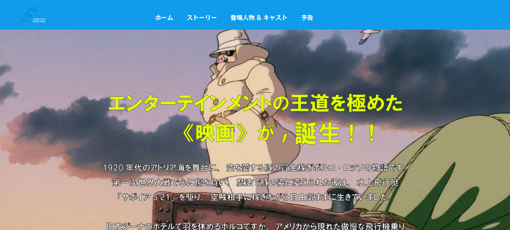

バトジャムンフオチル
Web科
Web科
ウェブ開発とデザインにおける私の取り組みへようこそ。ここでは、ユーザーフレンドリーなウェブ体験を創造するために、技術スキルとデザインへの情熱をどのように融合させているかをご紹介します。フルスタック開発からインタラクティブなフロントエンドデザインまで、最近のプロジェクトをご覧ください。
コクーンタワー公式サイト制作において、私はチームのポートフォリオページに特化して取り組みました。訪問者が各メンバーのスキルや実績をスムーズに探せるよう、情報構造とナビゲーションの最適化を重視。視覚的な魅力を保ちつつ、ユーザーにとって価値ある情報を効率的に提供する設計を心がけました。使いやすさを追求した私の成果をご覧ください。

映画『紅の豚』の魅力をウェブ上で最大限に表現するため、視覚的な美しさと使いやすさを両立させたファンサイトを制作しました。ポルコの粋な格言、心に残る登場人物の紹介、そして印象的なシーンのギャラリーなど、ファンが求めるであろうコンテンツを網羅しています。
また、どのデバイスからでも映画の世界に深く没入できるよう、レスポンシブデザインに完全対応させました。制作過程では慣れないマークアップに苦戦する場面もありましたが、例えばコンテンツ間の区切り線をHTMLではなくIllustratorで作成するなど、自分なりの工夫で乗り越えました。
このプロジェクトを通して、技術的な課題を乗り越える楽しさと、創造的な解決策を見出す喜びを実感しました。このサイトが、映画『紅の豚』への私の情熱と、ウェブ制作における問題解決能力の証明となれば幸いです。
